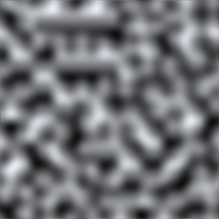

Mathf.PerlinNoise
Parameters
| x | X-coordinate of sample point. | |
| y | Y-coordinate of sample point. |
Returns
float Value between 0.0 and 1.0. (Return value might be slightly beyond 1.0.)
Description 描述
Generate 2D Perlin noise.
Perlin noise is a pseudo-random pattern of float values generated across a 2D plane (although
the technique does generalise to three or more dimensions, this is not implemented in Unity).
The noise does not contain a completely random value at each point but rather consists
of "waves" whose values gradually increase and decrease across the pattern. The noise can
be used as the basis for texture effects but also for animation, generating terrain heightmaps
and many other things.

Perlin noise sampled in the range 0..10 (the greyscale values represent values from 0..1)
Any point in the plane can be sampled by passing the appropriate X and Y coordinates. The
same coordinates will always return the same sample value but the plane is essentially infinite
so it is easy to avoid repetition by choosing a random area to sample from.
using UnityEngine; using System.Collections;
// Create a texture and fill it with Perlin noise. // Try varying the xOrg, yOrg and scale values in the inspector // while in Play mode to see the effect they have on the noise.
public class ExampleScript : MonoBehaviour { // Width and height of the texture in pixels. public int pixWidth; public int pixHeight;
// The origin of the sampled area in the plane. public float xOrg; public float yOrg;
// The number of cycles of the basic noise pattern that are repeated // over the width and height of the texture. public float scale = 1.0F;
private Texture2D noiseTex; private Color[] pix; private Renderer rend;
void Start() { rend = GetComponent<Renderer>();
// Set up the texture and a Color array to hold pixels during processing. noiseTex = new Texture2D(pixWidth, pixHeight); pix = new Color[noiseTex.width * noiseTex.height]; rend.material.mainTexture = noiseTex; }
void CalcNoise() { // For each pixel in the texture... float y = 0.0F;
while (y < noiseTex.height) { float x = 0.0F; while (x < noiseTex.width) { float xCoord = xOrg + x / noiseTex.width * scale; float yCoord = yOrg + y / noiseTex.height * scale; float sample = Mathf.PerlinNoise(xCoord, yCoord); pix[(int)y * noiseTex.width + (int)x] = new Color(sample, sample, sample); x++; } y++; }
// Copy the pixel data to the texture and load it into the GPU. noiseTex.SetPixels(pix); noiseTex.Apply(); }
void Update() { CalcNoise(); } }
Although the noise plane is two-dimensional, it is easy to use just a single one-dimensional line through the pattern, say for animation effects.
using UnityEngine;
public class Example : MonoBehaviour { // "Bobbing" animation from 1D Perlin noise.
// Range over which height varies. float heightScale = 1.0f;
// Distance covered per second along X axis of Perlin plane. float xScale = 1.0f;
void Update() { float height = heightScale * Mathf.PerlinNoise(Time.time * xScale, 0.0f); Vector3 pos = transform.position; pos.y = height; transform.position = pos; } }
Note: It is possible for the return value to slightly exceed 1.0f. You may need to clamp the return value if the 0.0 to 1.0 range is important to you.